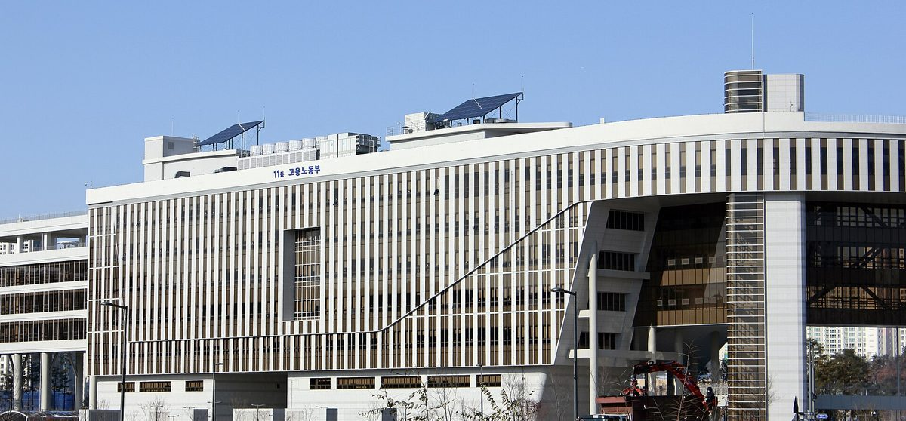

석탄발전 폐쇄 지역 정의로운전환 특별지구 지정기준 고시안 행정예고 중…11월 2일까지 의견 받는다

고용노동부·산업통상부 23일 제정안 공개…신청 전 협력업체 노사·주민 의견수렴 의무화, 지정 기본 2년에 연장 포함 최장 5년
석탄화력발전소 폐쇄 등 탄소중립 이행으로 고용과 지역경제에 큰 변화가 생겼거나 예상되는 지역을 '정의로운전환 특별지구'로 지정하는 기준을 담은 고시 제정안이 11월 2일까지 행정예고된다. 고용노동부와 산업통상부가 지난 23일 내놓은 '정의로운전환 특별지구의 지정기준 등에 관한 고시' 제정안은 탄소중립기본법 제48조와 같은 법 시행령 제49조에 근거하며, 탄소중립 사회로의 이행 과정이라는 필수요건에 더해 고용환경의 현저한 변화, 기업 경영환경 악화, 사회·경제적 불평등 해소 필요 가운데 하나 이상을 갖추도록 했다. 특별지구는 원칙적으로 시·군·구 단위로 지정하되 두 곳 이상을 묶어 신청할 수 있고, 시·도지사가 두 부처에 신청한다. 지방정부는 신청에 앞서 자체 계획을 세우면서 원청기업뿐 아니라 협력업체 노사와 지역주민의 의견을 반드시 들어야 하며, 그 계획을 20일 이상 공고해야 한다. 지정 기간은 기본 2년으로 심의를 거쳐 한 차례 2년을 연장할 수 있고 특별한 경우 1년을 더해 최장 5년이며, 지정되면 관계부처가 함께 실업 예방·재취업 촉진·기업 경영안정·지역산업 전환 대책을 마련하고 한국고용정보원·한국산업기술진흥원 등이 중앙 지원센터를 맡는다. 아직 행정예고 단계여서 특별지구로 지정된 지역이나 확정된 예산은 없고, 지정되더라도 정해진 금액이 자동으로 지원되는 구조는 아니다.
시민에너지 관점
고시안이 협력업체 노동자와 주민의 의견수렴을 의무로 넣은 것은 석탄발전 폐쇄의 부담이 발전공기업 정규직 바깥에 더 무겁게 떨어진다는 점을 제도가 받아들인 첫걸음이다. 다만 지원 내용이 재취업과 기업 경영안정에 머물면, 발전소가 떠난 땅과 송전망에 새로 들어설 발전소의 이익은 다시 지역 밖으로 빠져나갈 수 있다. 스페인은 석탄발전소가 문을 닫은 지역의 송전망 접속 용량을 새 재생에너지 사업에 나눠 줄 때 지역 일자리와 지역에 돌아가는 이익을 심사 기준에 넣어 왔다. 의견 마감인 11월 2일 전에 석탄발전 지역의 주민과 노동자, 지방정부가 주민이 출자하는 재생에너지를 전환계획의 한 축으로 넣어 달라는 의견을 내야 한다.
출처: 크라이미트폴 2026-10-26 신성은 원문 보기
石炭火力の閉鎖地域を対象とする「公正な移行特別地区」指定基準の告示案を行政予告中…11月2日まで意見募集
雇用労働部・産業通商部が23日に制定案を公表…申請前に協力企業の労使・住民への意見聴取を義務化、指定は基本2年で延長を含め最長5年
石炭火力発電所の閉鎖などカーボンニュートラルへの移行によって雇用や地域経済に大きな変化が生じた、または見込まれる地域を「公正な移行特別地区」に指定する基準を定めた告示の制定案が、11月2日まで行政予告されている。雇用労働部と産業通商部が23日に示した「公正な移行特別地区の指定基準等に関する告示」制定案は、炭素中立基本法第48条と同法施行令第49条に基づき、カーボンニュートラル社会への移行過程にあるという必須要件に加え、雇用環境の著しい変化、企業の経営環境の悪化、社会・経済的不平等の解消の必要性のうち一つ以上を満たすよう定めた。特別地区は原則として市・郡・区単位で指定し、二つ以上をまとめて申請することもでき、広域自治体の首長が両省に申請する。地方政府は申請に先立って独自の計画を立てる際、元請け企業だけでなく協力企業の労使と地域住民の意見を必ず聞かなければならず、その計画を20日以上公告しなければならない。指定期間は基本2年で、審議を経て1回2年延長でき、特別な場合はさらに1年を加えて最長5年となる。指定されると関係省庁が合同で失業予防・再就職促進・企業の経営安定・地域産業の転換対策を策定し、韓国雇用情報院や韓国産業技術振興院などが中央支援センターを担う。まだ行政予告の段階のため、特別地区に指定された地域や確定した予算はなく、指定されても決まった金額が自動的に支援される仕組みではない。
市民エネルギーの視点
告示案が協力企業の労働者と住民への意見聴取を義務として盛り込んだことは、石炭火力閉鎖の負担が発電公企業の正社員の外側により重くのしかかるという点を制度が受け入れた第一歩だ。ただ、支援の中身が再就職と企業の経営安定にとどまれば、発電所が去った土地と送電網に新たに建つ発電所の利益は、再び地域の外に流れ出かねない。スペインは石炭火力発電所が閉鎖された地域の送電網の接続容量を新たな再生可能エネルギー事業に割り当てる際、地域の雇用や地域に還元される利益を審査基準に入れてきた。意見締め切りの11月2日までに、石炭火力のある地域の住民と労働者、地方政府は、住民が出資する再生可能エネルギーを移行計画の柱の一つに加えるよう意見を出すべきだ。
出典: クライミットポル（climatepol） 2026-10-26 シン・ソンウン 原文を読む
韩国就燃煤电厂关停地区"公正转型特别区"指定标准告示草案进行行政预告，11月2日前征求意见
雇佣劳动部与产业通商部23日公布制定案…申请前须听取协力企业劳资双方和居民意见，指定期限基本2年、含延长最长5年
韩国关于把因关停燃煤电厂等碳中和转型导致就业和地方经济已经或预计发生重大变化的地区指定为"公正转型特别区"的告示制定案，将行政预告至11月2日。雇佣劳动部和产业通商部23日公布的《公正转型特别区指定标准等相关告示》制定案，以《碳中和基本法》第48条及其施行令第49条为依据，规定除"处于向碳中和社会转型过程中"这一必要条件外，还须满足就业环境显著变化、企业经营环境恶化、需要消除社会经济不平等三项中的至少一项。特别区原则上以市、郡、区为单位指定，也可将两个以上合并申请，由广域自治团体首长向两个部门提出申请。地方政府在申请前制定自身计划时，不仅要听取总承包企业的意见，还必须听取协力企业劳资双方和当地居民的意见，并将计划公告20天以上。指定期限基本为2年，经审议可延长一次2年，特殊情况下可再加1年，最长5年。获指定后，相关部门将联合制定预防失业、促进再就业、稳定企业经营和推动地方产业转型的对策，韩国雇佣信息院、韩国产业技术振兴院等承担中央支援中心职能。由于目前仍处于行政预告阶段，尚无获指定地区和确定预算，即使获得指定，也不会自动拨付固定金额。
市民能源视角
告示草案把听取协力企业劳动者和居民意见写成义务，是制度承认燃煤电厂关停的负担更多落在发电国企正式员工之外的第一步。但如果支援内容只停留在再就业和企业经营稳定上，在电厂离开后的土地和电网上新建电站的收益，可能再次流出地区之外。西班牙在把燃煤电厂关停地区的电网接入容量分配给新的可再生能源项目时，一直把当地就业和回馈当地的收益纳入评审标准。在11月2日意见截止之前，燃煤电厂所在地区的居民、劳动者和地方政府应当提出意见，要求把居民出资的可再生能源列为转型计划的支柱之一。
来源: climatepol 2026-10-26 Shin Seong-eun 查看原文
Korea's draft criteria for just transition special zones in coal plant closure areas open for comment until November 2
Labor and industry ministries released the draft on the 23rd; local governments must consult subcontractors' workers and management and residents before applying, with designation for two years and up to five with extensions
A draft public notice setting the criteria for designating "just transition special zones," areas where the shift to carbon neutrality, such as the closure of coal-fired power plants, has caused or is expected to cause major changes in jobs and the local economy, is open for public comment until November 2. The draft notice on designation criteria for just transition special zones, released on the 23rd by the Ministry of Employment and Labor and the Ministry of Trade and Industry, is based on Article 48 of the Framework Act on Carbon Neutrality and Article 49 of its enforcement decree; besides the mandatory condition of being in the process of transition to a carbon-neutral society, an area must meet at least one of three conditions: a marked change in the employment environment, a worsening business environment for companies, or a need to address social and economic inequality. Zones are in principle designated by city, county or district, several may apply together, and applications are filed by the provincial governor or metropolitan mayor with the two ministries. Before applying, a local government must draw up its own plan after hearing not only from the prime contractor but also from the workers and management of subcontractors and from local residents, and must post the plan publicly for at least 20 days. Designation lasts two years as a rule, can be extended once by two years after review and by one more year in special cases, for a maximum of five years; once a zone is designated, ministries will jointly prepare measures for preventing unemployment, promoting re-employment, stabilizing businesses and shifting local industry, with the Korea Employment Information Service and the Korea Institute for Advancement of Technology among those serving as central support centers. As the notice is still at the comment stage, no area has been designated and no budget has been set, and designation will not automatically bring a fixed amount of support.
Citizen Energy View
By making it mandatory to hear subcontracted workers and residents, the draft takes a first step toward recognizing that the burden of coal plant closures falls more heavily outside the regular staff of state-owned power companies. But if support stops at re-employment and business stabilization, the profits from new power plants built on the land and grid connections the coal plants leave behind could once again flow out of the region. Spain, when allocating the grid connection capacity freed up by closed coal plants to new renewable projects, has included local jobs and benefits returned to the area among its selection criteria. Before the November 2 deadline, residents, workers and local governments in coal regions should submit comments calling for resident-owned renewable energy to be made one pillar of transition plans.
Source: climatepol 2026-10-26 Shin Seong-eun Read the original